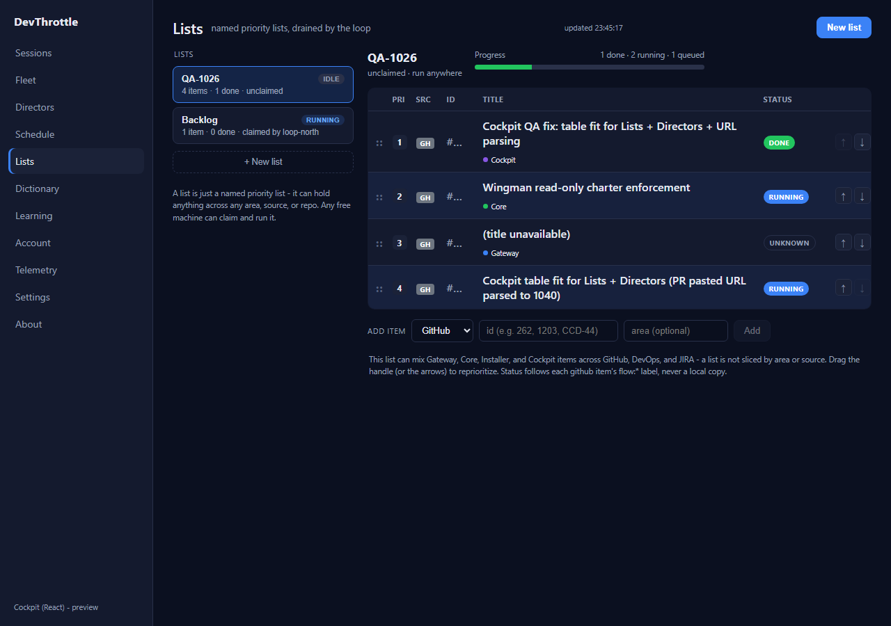
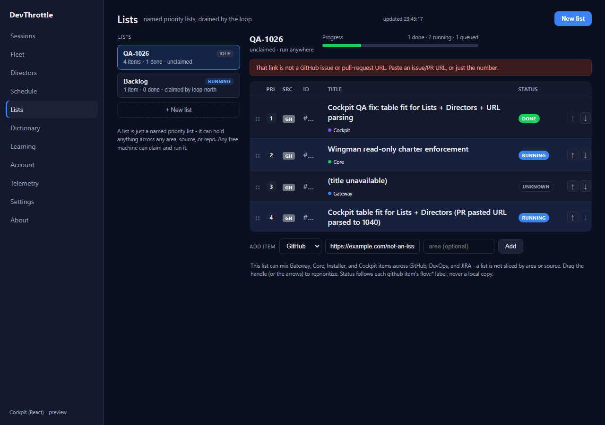
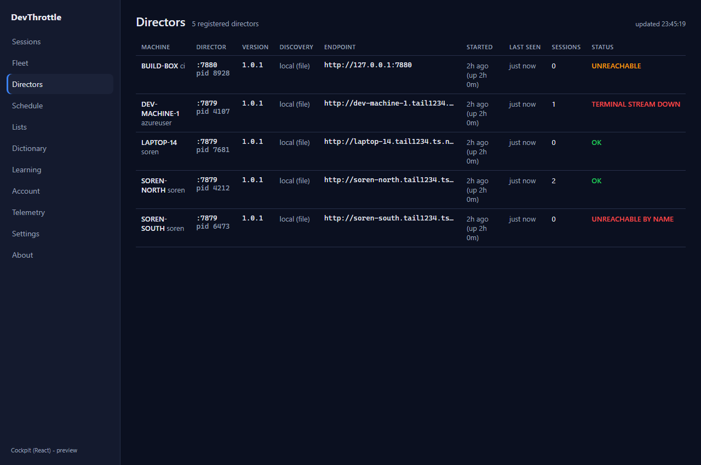
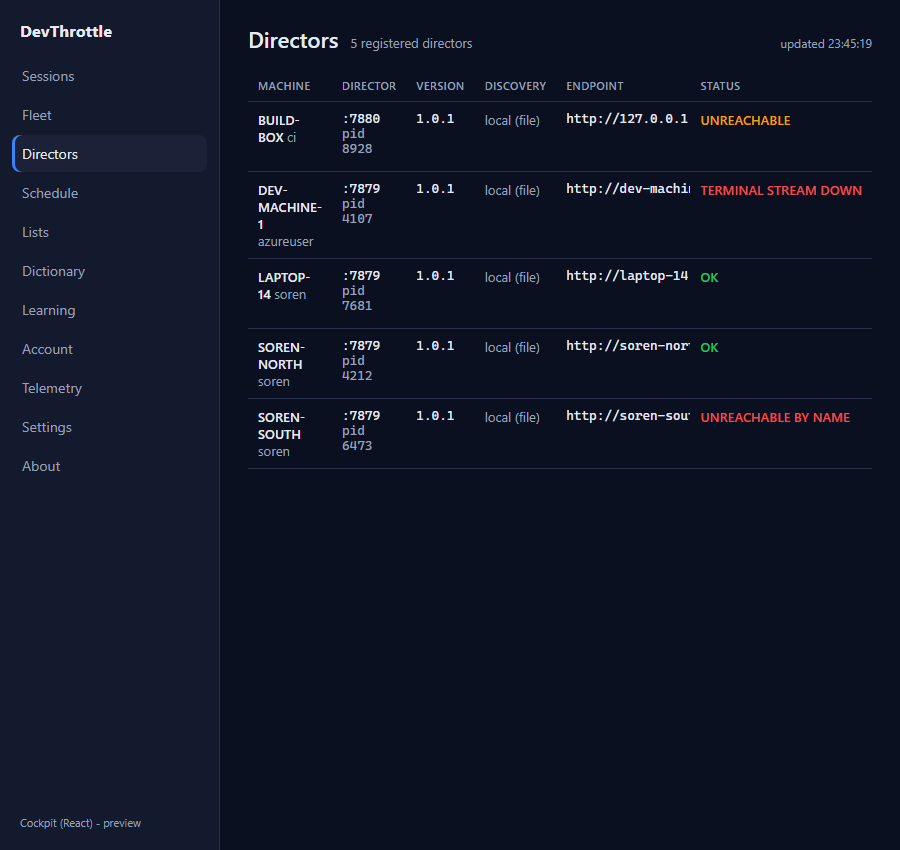
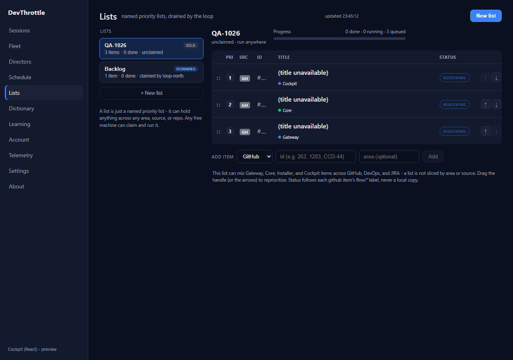
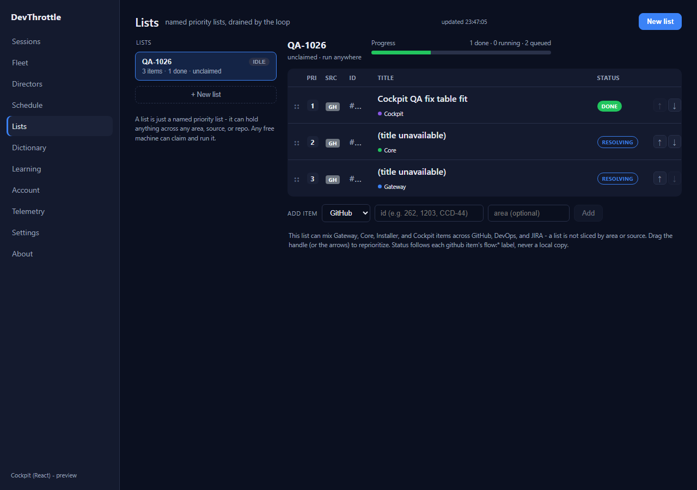
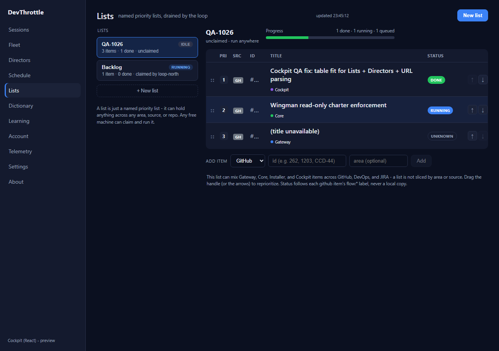

Cockpit table fit for Lists + Directors (long ids / Status column clip) + Lists URL parsing. PR #1040,
branch issue-1026-cockpit-table-fit. Verified independently by the QA Agent - the developer's
report and screenshots were NOT trusted; every criterion was reproduced live in the running React Cockpit.
VERIFIED - all acceptance criteria met. PASS.
An isolated worktree of the PR branch was built from scratch. The real React Cockpit was run
(vite dev server) and driven with Playwright; the Gateway data calls (/lists,
/gateway/lists/item-status, /directors, /sessions) were served with
controlled mock responses so each acceptance criterion could be exercised deterministically against the
actual shipped components (ListsView, DirectorsView, their CSS, and
itemStatus.ts). Every screenshot below was read and judged Expected vs Actual.
| Expected | A pre-existing long/URL-shaped id must not widen the Id column or push Title/Status off-screen; the Id cell ellipsizes (table-layout:fixed). |
|---|---|
| Actual | Row 3 carries a ~140-char URL id. It is ellipsized to #... in the Id column; Title ("(title unavailable)") and Status (UNKNOWN) are fully visible. Metrics: Title header right = 1086px, Status header right = 1186px, viewport = 1280px (both inside the viewport); Id cell width pinned to 52px. |
| Verdict | PASS |
| Expected | Pasting a GitHub issue/PR URL stores just the number and resolves it; a non-issue link is rejected inline and not added. |
|---|---|
| Actual | Pasting https://github.com/thefrederiksen/devthrottle/pull/1040 appended item id 1040 (row 4), which resolved to its title + RUNNING badge - proving the URL was parsed to the number and resolved. Pasting https://example.com/not-an-issue produced the inline banner "That link is not a GitHub issue or pull-request URL..." and the item was NOT added (list stayed at 4 items). |
| Verdict | PASS |


| Expected | At 1280px the Status column is visible without horizontal scroll; the sticky-right change keeps Status visible when the table overflows at a narrower width. |
|---|---|
| Actual | At 1280px the whole table fits (scrollWidth == clientWidth == 1004px) and the Status column (UNREACHABLE / TERMINAL STREAM DOWN / OK / UNREACHABLE BY NAME) is fully visible; Status header right = 1252px inside the 1280px viewport. At 900px the table overflows (scrollWidth 968 > clientWidth 624) and the Status header cell computes position: sticky; right: 0 - it stays pinned on screen (header right = 872px inside the 900px viewport) while the Endpoint/Started columns scroll underneath. |
| Verdict | PASS |


| Expected | A not-yet-resolved row shows a distinct "resolving" badge (not the UNKNOWN failure badge), and rows populate one at a time rather than all flipping together. |
|---|---|
| Actual | Before resolution, rows show a distinct outlined RESOLVING badge (class st resolving), visually different from the filled UNKNOWN badge. With staggered resolve latencies the first row reached DONE while the other two still showed RESOLVING - proving per-item incremental population (the code writes each item's result with its own setInfo). After resolution the three items settled to DONE / RUNNING / UNKNOWN, where UNKNOWN (a genuine failure) is distinct from the earlier RESOLVING state. |
| Verdict | PASS |



| Step | Result |
|---|---|
Cockpit npm run build (tsc --noEmit + vite build) | PASS - built, 0 errors |
npm run lint (eslint, whole workspace) | PASS - no findings |
Gateway dotnet build -p:RunCockpitBuild=true | PASS - Build succeeded, 0 Warning(s), 0 Error(s) |
dotnet build cc-director.sln | PASS - Build succeeded, 0 Warning(s), 0 Error(s) |
itemStatus.ts; no C# production files changed, no architecture/security surface touched, so no CenCon docs/cencon/ update is required.NoCrossMachineLoopbackGuardTests.No_new_production_file_hardcodes_cross_machine_loopback and
SessionLifecycleTests.KillSession_RunningSession_TransitionsToExited). Both are also red on
main (the PR's failures are a strict subset of main's, which additionally fails
BrowserPageRoutesTests and SessionManagerTests). The loopback guard flags
DesktopHostedAiCta.cs and GatewayConfig.cs - .cs files this PR never
touches. These are the known pre-existing baseline failures, not a regression from #1026.